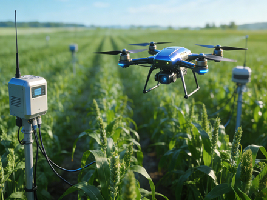

精准农业与植物病害检测
Precision Agriculture and Plant Disease Detection

围绕田间图像中的病斑、虫害和作物生长状态，研究小目标检测、实例分割、多光谱感知与端到端 Transformer 检测方法。
关键研究问题
- 自然光照、遮挡与背景干扰
- 病斑和虫害的小尺度、细粒度差异
- 田间数据的跨时相与跨设备泛化
主要研究内容与技术路线
- Transformer 检测
- 实例分割与多尺度特征建模
- RGB 与近红外遥感感知
应用场景
- 作物病害监测
- 虫害识别
- 无人机农情巡查
相关研究人员
代表性成果
- 16
PD-TR: End-to-end plant diseases detection using a transformer（2024-09）
Computers and Electronics in Agriculture, 224, 109123
- 17
Crop pest recognition in natural scenes using convolutional neural networks（2020-02）
Computers and Electronics in Agriculture, 169, 105174
- 18
Fusarium wilt of radish detection using RGB and near infrared images from Unmanned Aerial Vehicles（2020-09）
Remote Sensing, 12, 2863
- 19
An efficient attention module for instance segmentation network in pest monitoring（2024-04）
Computers and Electronics in Agriculture, 195, 106853

研究配图：作物健康与病害智能感知。
遥感目标检测
Remote Sensing Object Detection

面向无人机与遥感图像解译，研究注意力引导特征融合、复杂背景中的小目标检测与高精度目标定位。
关键研究问题
- 目标尺度跨度大且排列密集
- 地物背景复杂、类别间差异弱
- 视角变化和分辨率变化显著
主要研究内容与技术路线
- 注意力引导特征融合
- 多尺度检测
- 无人机遥感目标定位
应用场景
- 遥感影像解译
- 无人机巡检
- 地物目标监测
相关研究人员
代表性成果
- 06
ORCNN-X: Attention-driven multiscale network for detecting small objects in complex aerial scenes（2023-07）
Remote Sensing, 15, 3497
- 07
Drone-Based High-Precision Object Detection in Remote Sensing with Attention-Guided Feature Fusion（2026-04）
Tsinghua Science and Technology, 31, 1263-1281

研究配图：复杂场景下的遥感目标定位。
医学图像分析
Medical Image Analysis

围绕低剂量 CT 图像的噪声抑制与结构保持，研究上下文 Transformer、领域对比学习和鲁棒视觉表征。
关键研究问题
- 低剂量成像中的噪声与细节损失
- 不同设备和协议造成的数据分布差异
- 医学数据隐私与高质量标注稀缺
主要研究内容与技术路线
- 低剂量 CT 去噪
- 上下文 Transformer
- 领域对比学习
应用场景
- 医学图像预处理
- 图像重建
- 辅助诊断前的图像质量增强
相关研究人员
代表性成果
- 02
CT-Denoimer: efficient contextual transformer network for low-dose CT denoising（2025-06）
Physics in Medicine & Biology, 70, 115024
- 03
DSCN-Net: domain-specific contrastive network for unsupervised low-dose CT denoising（2025-10）
Neurocomputing, 651, 130919
- 04
TumorNet: A hybrid lightweight framework for brain tumor classification and reasoning（2026-08）
Information Sciences, 746, 123423
研究配图：面向医学成像的智能视觉分析。
红外目标检测
Infrared Target Detection

聚焦红外小目标增强、背景杂波抑制与复杂环境下的鲁棒检测。
关键研究问题
- 弱小目标与低对比度
- 复杂背景杂波干扰
- 夜间和恶劣天气中的有限纹理信息
主要研究内容与技术路线
- 小目标增强
- 背景杂波抑制
- 多尺度上下文建模
应用场景
- 夜间感知
- 低可见度监测
- 复杂环境目标识别
研究配图：复杂环境下的红外目标感知。